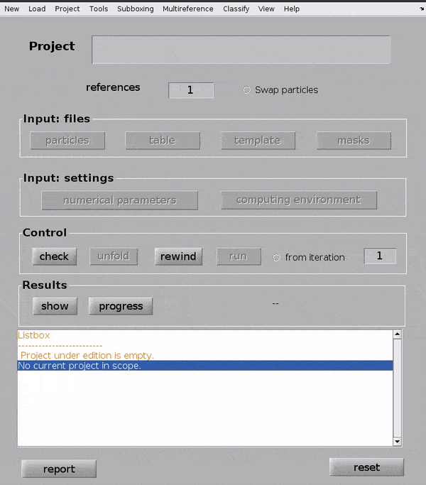
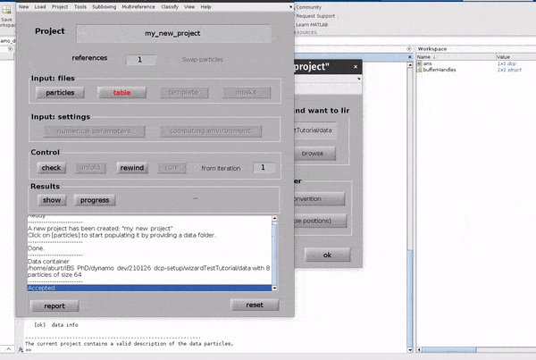
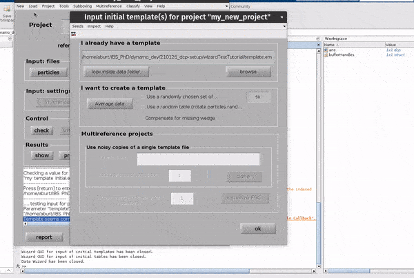

Simple subtomogram averaging¶
This mini-tutorial will show you how to quickly set up and run a subtomogram averaging experiment in Dynamo.
In Dynamo lingo, this is referred to as an ‘alignment project’.
We will set up our alignment project from the ‘Dynamo current project’ GUI (dcp).
Alignment projects can also be set up from the
MATLAB shell
or the
Linux command line.
You can also set up your project locally, then
bundle it up and send it to a remote machine/cluster.
Prerequisites¶
a set of particles in a
Dynamodata container(optional) metadata for each particle in a
Dynamotable file(optional) a reference volume with the same dimensions as your particles
(optional) a mask around your region of interest
Setup¶
First, we need to open Dynamo, either activating it in MATLAB or using the standalone version.
Open the dcp gui¶
The dcp GUI is the main tool in Dynamo for interactively designing subtomogram averaging experiments.
To open the GUI simply run dcp from your Dynamo shell.
Name the project¶
Click in the box to the right of Project name and write a name for your project.
Choose something descriptive, it might help you remember what you did in a few months time!
Hit Enter. In the dialogue box which pops up, confirm that you would like to create a new project by clicking Create new project.

Input files¶
Input your particles¶
Click on the particles button in the Input: files row. In the dialogue box which pops up, enter the name of your data file.
Click on the particles button in the Input: files row.
In the dialogue box which pops up, enter the name of your data file.

Click on the table button in the Input: files row. In the dialogue box which pops up, enter the name of your table file.
If you don’t have a template, you can generate a blank table or a random table using the buttons in the Dialogue box.

Click on the template button in the Input: files row. In the dialogue box which pops up, enter the name of your template file.
If you don’t have a template, a random subset of the data can be used to generate an initial reference volume from the GUI by selecting
one of the options in the I want to create a template section, setting the desired number of particles and hitting Average data.

Click on the masks button in the Input: files row. In the dialogue box which pops up, you can enter up to four files
an alignment mask
a classification mask
a Fourier mask for the template
a Fourier shell correlation mask

The Use default masks button will create masks covering the full extend of real space and fourier space for each mask automatically.
The alignment mask defines a masked region of real space in which cross correlations used for alignments will be calculated. The classification mask defines a masked region of real space in which cross correlations used for classification will be calculated. The Fourier mask for the template defines the region of Fourier space in which you have information in your template (reference) volume. The Fourier shell correlation mask defines a masked region of real space in which Fourier shell calculations will be calculated.
Each mask can be created from the GUI directly, or an external mask can be provided. The classification mask and the Fourier shell correlation mask are not relevant for simple, single reference alignment projects such as the one we are setting up.
Alignment parameters¶
From the dcp GUI click numerical parameters in the Input: settings row. This will open up a separate window in which many parameters relating to the numerical aspects of your alignments can be defined.
{kind=link}
Attention
You should think carefully about how much you allow particles to move during an iterative alignment experiment. Particles have a tendency to ‘wander off’ in low SNR environments, restricting the evolution of shifts appropriately (shift limiting way 3 or 4) can reduce this problem.
If your angular parameters come from a geometrical model, restricting angular searches ensures the particles do not deviate too much from initial estimates.
Key info:
Hit
alton your keyboard or the?button for more info on a parameterAlignment projects can be split up into rounds with different alignment parameters
Each round can have an arbitrary number of iterations
Each round employs a multilevel refinement angular sampling scheme
High and low pass thresholds (in Fourier pixels) define which spatial frequencies are aligned
Shifts are x, y, z shifts in the reference frame of each experimental particle
The evolution of particle positions can be restricted using the
shift limiting wayoption.
You can get a depiction of your current angular search parameters from the Angles -> Show sketch of scanning angles -> Round X menu options.

Computational parameters¶
Computational parameters are used to tell the projects what it needs to know about the computing environment where it will be run.
Click computing environment from the dcp GUI, a new window will open in which parameters can be edited.
Hardware¶
First, choose the hardware on which you will be running your alignment project. We typically use GPU (standalone).
Attention
If running in a GPU modus, you should use only one CPU core in this box!
(optional) specifying GPUs¶
Specify the GPU identifiers for GPUs you would like to use for alignment. These are typically enumerated from 0.
e.g. for a 4 GPU system, set this to 0,1,2,3
Leave the motor as spp (this stands for sub-pixel precision).
MPI¶
This section can be used to select a cluster submission script which works with your system. More info here.
Parallelized averaging step¶
This section allows a user to specify how many cores they would like to use for the ‘averaging’ step between each iteration of subtomogram averaging. This should be set to the number of logical (not hyperthreaded) cores available on the system used for executing the project.
Unfolding the project¶
Unfolding a project means getting it ready to run on your system. If executing on a remote system, the project should be unfolded on that system.
To unfold a project, first hit check, then unfold from the control section of the dcp GUI.
This will create a file <my_new_project>.exe or <my_new_project.m> depending on whether the project will run in the standalone or the MATLAB environment.
Running the project¶
If running a project in the MATLAB modus, just type this in your Dynamo shell:
run <my_new_project>.m`
If running using the standalone, you first have to activate Dynamo in the shell. Usually this is achieved by running:
source /path/to/dynamo/installation/dynamo_activate_linux_shipped_MCR.sh
./<my_new_project>.exe
Looking at the results¶
Hitting the show button from the Results row of the dcp GUI opens up a new window for looking at the results of an alignment project.
Hitting the progress button will tell you the current status of the alignment project.
From the results GUI, averages and associated particle metadata can be visualised in various tools. You can also open your maps directly in other packages such as ChimeraX.
Visualising particle positions and orientations can also be useful to check that an alignment procedure is behaving as you expect.